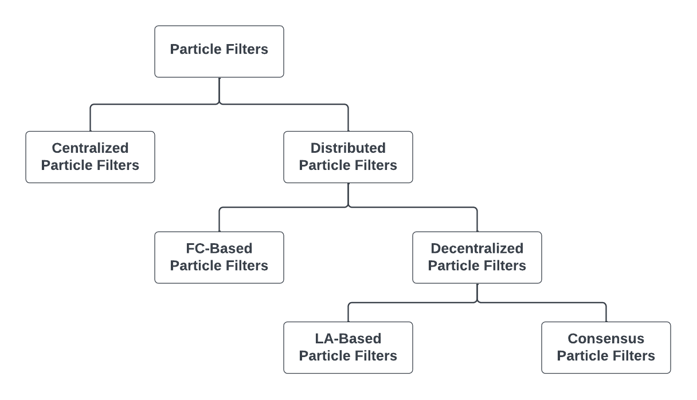

Flexible Distributed Particle Filtering for the Internet of Things via Aggregate Computing
Angela Cortecchia, Davide Domini, Giovanni Ciatto, Roberto Casadei, Danilo Pianini, and Mirko Viroli
Department of Computer Science and Engineering (DISI)
Alma Mater Studiorum – University of Bologna - Cesena, Italy

Motivation
Estimating hidden state of dynamic systems from partial, noisy observations
Problem
Many cyber-physical systems rely on estimating hidden dynamical states over time.
Examples include target tracking and environmental monitoring.
Constraint
The state is not directly observable.
We only receive noisy, partial, and spatially distributed measurements.
Core problem: reconstruct latent dynamics from uncertain observations.
Bayesian Inference
- Goal: estimate unknown parameters $\theta$ from observed data $D$
- Prior $P(\theta)$: belief before observing data
- Likelihood $P(D \mid \theta)$: compatibility between data and parameter
- Posterior $P(\theta \mid D)$: updated belief after observing data
Bayes’ rule
$$ P(\theta \mid D) = \frac{P(D \mid \theta) P(\theta)}{P(D)} $$
Start from a prior belief, observe data, update the estimate.
From Bayesian Inference to Particle Filters
Filtering objective
In principle, Bayesian inference gives the full posterior:
$$P(x_t \mid y_1, \dots, y_t)$$
Where:
- $y_1, \dots, y_t$ are the noisy observations up to time $t$
- $x_t$ is the hidden state at time $t$
Analytical solution
- Linear dynamics
- Linear observation model
- Gaussian noise
- Posterior remains Gaussian
- Kalman filter applies
Real-world systems
- Nonlinear dynamics
- Non-Gaussian noise
- Complex or multimodal posterior
- Exact inference becomes intractable
Particle Filters
Monte Carlo state estimation for nonlinear and non-Gaussian systems
Centralized Particle Filters
Posterior approximation
We estimate a hidden state $x_t$ from noisy observations $y_{1:t}$ by representing the posterior with weighted samples:
$p(x_t \mid y_{1:t}) \approx \sum_i w_t^i \delta(x_t - x_t^i)$
One filtering iteration
- Prediction: Propagate each particle through the dynamical model.
- Weighting: Evaluate each particle against the new observation.
- Resampling: Keep plausible hypotheses and discard weak ones.
- Estimate: Compute the state estimate from the weighted particles.
In distributed settings, this machinery remains the same; the hard part becomes information coordination.
Distributed Particle Filters
Filtering becomes a coordination problem
Why Distributed Particle Filters?
Motivation
In many networked systems, observations are collected by multiple spatially distributed agents.
A centralized particle filter assumes all measurements are available in one place.
Why this is unrealistic
- Limited bandwidth
- Energy constraints
- Latency
- Topology changes
- Node and link failures
Main design question: how do we distribute filtering without losing too much estimation quality?
From Centralized PF to Distributed PF
Same filtering logic
- Prediction
- Weighting
- Resampling
- State estimation
Different architecture
- Measurements are local
- Communication is constrained
- No node may have full global information
- Information must be routed, fused, or summarized
Hence, DPF is mainly a coordination problem on top of the PF machinery.
A High-Level Taxonomy of DPF Architectures
Fusion center
Local agents process measurements, then send local results to a central node for fusion.
Leader-agent based
A selected path or subset of nodes accumulates information and performs global estimation.
Consensus-based
All agents iteratively exchange information to obtain consistent local beliefs.
Main trade-off: estimation quality vs communication burden vs robustness.
State Estimation of Dynamic Systems

Fusion Center-Based DPF
Architecture
Each agent processes its own measurements locally. Local posteriors or local estimates are reported to a fusion center, which combines the received information and computes the global estimate.
Why attractive
- Conceptually simple
- Easy to organize
- Global decision available in one place
Typical use case
Applications where global knowledge is needed only at one node.
Fusion Center-Based DPF: Pros and Cons
Advantages
- Simple architecture
- Easy fusion logic
- Often good estimation quality
- Natural with a central decision-maker
Drawbacks
- Single point of failure
- Poor robustness against fusion-center faults
- High communication burden near the center
- Strong dependence on network topology
Reducing the Burden: Clustered / Two-Tier Architectures
Two-tier organization
- Sensors: Collect raw measurements or local summaries.
- Cluster heads: Aggregate nearby sensor information.
- Fusion center: Combines cluster-level information.
- Global estimate: A single decision point remains.
This reduces long-distance communication and avoids requiring every sensor to talk directly to the fusion center.
Leader-Agent Based DPF
Key idea
No fixed fusion center is assumed. Instead, only a subset of agents is activated for global estimation, forming a leader-agent path along which information is accumulated and propagated.
Design intuition
Global estimation is not done by everyone: it is delegated to selected nodes, dynamically chosen in the network.
Leader-Agent Based DPF: Pros and Cons
Advantages
- Avoids a permanently fixed central node
- Can reduce communication compared with fully decentralized schemes
- May exploit informative nodes more efficiently
Drawbacks
- Performance depends on leader selection
- Accuracy and energy consumption are coupled to the selection policy
- Coordination overhead remains
- Leadership can be fragile
Consensus-Based DPF
Architecture
All agents participate in the filtering process. No fusion center and no privileged node are required.
High-level intuition
- Local beliefs: Each node starts from local information.
- Exchange: Neighbors communicate iteratively.
- Propagation: Information spreads through the network.
- Consistency: Estimates become more globally informed.
Consensus-Based DPF: Pros and Cons
Advantages
- High robustness to node failures
- Enhanced scalability
- Better adaptability to topology changes
- No single point of failure
Drawbacks
- Heavier communication demand
- Possible delay due to consensus iterations
- Synchronization and consistency can become nontrivial
- Agreement may not be the real objective
What Makes DPF Hard in Practice?
01. Particles are costly
Particle filters require many particles to represent the posterior.
02. Networks are imperfect
Quality is shaped by communication delays, packet drops, topology changes, and local computation limits.
03. Trade-offs dominate
DPF is always a compromise among accuracy, overhead, complexity, and robustness.
What Should We Be Careful About?
Cost and load
- Communication cost
- Load imbalance
- Particle, weight, or likelihood exchange may dominate the whole method
Network behavior
- Topology sensitivity
- Delay and asynchrony
- Node failures
Robustness
- Special nodes introduce fragility
- Failure handling must be part of the design
Information granularity
Raw measurements, local posteriors, particles, and likelihood summaries have very different costs.
A Design-Space View of DPF
DPF is not a single algorithmic recipe
It is a family of solutions defined by a few major design choices: where fusion happens, who performs filtering, what information is exchanged, and how often coordination happens.
FC. Fusion center
Simple but fragile.
LA. Leader-agent
Lighter but coordination-dependent.
CB. Consensus-based
Robust but communication-heavy.
A Field-Based Perspective
Flexible Distributed Particle Filtering for the Internet of Things via Aggregate Computing
A. Cortecchia, D. Domini, G. Ciatto, R. Casadei, D. Pianini, M. Viroli
Submitted to International Conference On Distributed Computing in Smart Systems and the Internet Of Things (DCOSS-IoT 2026)
How Can a Field-Based Perspective Help DPF?
Main point
The goal is not to introduce yet another DPF algorithm. The idea is to expose DPF as a configurable coordination problem.
Filtering logic
- Prediction
- Weighting
- Resampling
Coordination choices
- Where fusion happens
- What is exchanged
- How far information propagates
The field-based view turns architectural assumptions into design parameters, rather than hard-coded algorithmic commitments.
What Becomes Configurable?
Where fusion happens
Fixed fusion center, elected leader, or fully decentralized local filters.
What is exchanged
Particles, weights, posterior summaries, likelihood surrogates, or raw measurements.
How far information propagates
Only local neighborhoods, selected regions, or the whole network.
Who is active
Everybody, only relevant regions, leaders, or partitions.
Aggregate Measurements
A useful extra degree of freedom
Instead of exchanging particles, each node can run its own local particle filter while the weighting step exploits an aggregated measurement function built from neighboring observations.
$$ \hat{y}t = H{\mathcal{N}(k)} \left( \left{ h_k(x_t, v_{k,t}) \right}_{k \in \mathcal{N}} \right) $$
Nearby sensors collectively behave like a distributed sensor. This can be cheaper than exchanging particle sets.
Resilient Fusion-Center Behavior Without a Fixed Center
Leader-based fusion as a field-level behavior
- Election: A leader is selected dynamically.
- Fusion: The leader behaves as the current fusion center.
- Failure: If the leader disappears, the role is released.
- Self-healing: A new leader resumes the behavior.
We can move along the spectrum between centralized simplicity and decentralized robustness through configuration.
Experimental Evaluation
Two target-tracking experiments in a distributed sensor network
Experimental Setup
Scenario
- Target tracking in a 2D space
- Static network of 25 sensors
- Sensors deployed on a perturbed spatial grid
- Non-linear target trajectory
Execution
- Signal quality degrades with distance
- Each sensor executes at 1 Hz
- Experiments last 3000 simulated seconds
- Each configuration uses 100 random seeds
Two Experiments
01. Neighborhood measurement aggregation
Each node runs a local PF and aggregates neighboring measurements.
02. Leader-based fusion center
One elected leader acts as fusion center, and leader failure is injected during execution.
03. Common question
How much coordination is enough to improve tracking without paying the full cost of particle exchange?
Experiment 1: Local PF + Aggregated Measurements
Setup
Each sensor keeps its own local particle filter. No particle exchange occurs among neighbors. What changes is the measurement used for weighting.
Main variable
$$ |\mathcal{N}| \in {0, 1, 4, 7} $$
- With very small neighborhoods, filters struggle to converge
- Increasing neighborhood size improves information quality
- Better measurements imply better trajectory reconstruction
Experiment 1: Trajectories

Aggregating raw local observations can substantially improve weighting quality without exchanging particle sets.
Experiment 1: RMSE

Experiment 2: Elected Leader as Fusion Center
Setup
An elected leader plays the role of fusion center. Measurements are progressively aggregated toward the leader, and a leader failure is injected at time step 1500.
What happens
- Initial transient during first leader election
- Second transient when the current leader fails
- Tracking resumes after re-election
Key message
Fusion-center behavior can be retained, but with self-healing and without a permanently fixed central node.
Experiment 2: Leader-Based Fusion

Takeaways
01. DPF is coordination-heavy
The particle-filter machinery is standard; the difficult part is deciding how information moves through the network.
02. Aggregate computing exposes the design space
Fusion, propagation, exchanged information, and active regions become configurable parameters.
03. Local cooperation can pay off
Aggregated measurements and leader election improve estimation behavior while avoiding fully centralized assumptions.